Instalasi Firmware HCI Dari server kosong di rak sampai node yang bisa dibuka di browser.
Modul belajar interaktif dari 39 slide training: menyiapkan hardware, menyalakan USB bootable, menelusuri 13 layar installer satu per satu, lalu menutup modul dengan checklist verifikasi 10 item sebelum node boleh masuk cluster.
Janji modul: setelah selesai, kamu bisa memasang satu node HCI dari nol, tahu persis apa yang diminta tiap layar installer, dan bisa membedakan “sudah terpasang” dari “sudah siap dipakai”.
Node
node-01 online
10.251.251.111 · eth0
Disk sistem
200 GB /dev/sda
SSD · firmware 6.9.1
Catatan: contoh layar di modul ini memakai build 6.3.0 R1 — alur instalasinya identik dengan 6.9.1. Semua angka IP, ukuran disk, dan hasil speed test adalah contoh dari satu sesi instalasi nyata.
Setelah modul ini, kamu bisa melakukan ini sendiri.
Bukan hafalan urutan menu. Lima kemampuan ini yang dipakai saat benar-benar memasang node di lapangan — dan semuanya bisa kamu ulang tanpa didampingi.
Menyiapkan hardware sebelum menyentuh server: membaca spesifikasi, memilih disk yang benar, dan memastikan RAID card berada di mode yang didukung aSAN.
Mengatur BIOS: mengaktifkan VT-x, mematikan power saving, dan menyamakan waktu BIOS — tiga setelan yang paling sering dilupakan.
Membuat USB bootable dengan UltraISO, termasuk verifikasi hasil tulis sebelum media dipakai.
Menjalankan installer dari menu boot sampai konfirmasi format, tes kecepatan disk, dan konfigurasi eth0 tanpa ragu.
Memverifikasi hasil: login pertama, mengganti password default, mengecek kesehatan node, dan menyiapkan node untuk masuk cluster.
Target praktis: node menyala, bisa dibuka di browser, dan lolos semua item di checklist verifikasi. Kalau satu item gagal, jangan lanjut ke cluster.
Empat part, satu alur pemasangan.
Urutannya mengikuti cara kerja benar-benar dilakukan: siapkan dulu, baru pasang, lalu buktikan hasilnya. Melewati satu part biasanya berakhir dengan instalasi ulang.
Perencanaan & Hardware
Spesifikasi, topologi NIC, mode disk, dan BIOS.
Rekomendasi vs minimumMedia Instalasi
Firmware, USB bootable, dan mode boot.
Unduh & tulis ISOProses Instalasi
Dari boot USB sampai layar login pertama.
6 fase · 13 layarVerifikasi & Lanjutan
Bukti bahwa node sehat, lalu gabung cluster.
Checklist 10 itemCara pakai modul ini: setiap layar instalasi punya satu pembahasan — apa yang diminta, apa yang harus diisi, dan apa akibatnya kalau salah. Bagian bertanda JEBAKAN UMUM adalah kesalahan yang paling sering terjadi di lapangan. Kalau kamu sudah pernah memasang node, lompat ke Bagian 3 dan kerjakan checklist verifikasi di akhir modul.
Apa yang sebenarnya terjadi saat kamu menekan Install.
Instalasi firmware bukan satu aksi, tapi lima perpindahan keadaan. Pahami titik masuk dan keluar tiap tahap supaya kamu tahu di mana masalahnya kalau sesuatu gagal.
Hardware siap
Server menyala, VT-x aktif, disk terdeteksi di BIOS.
Media siap
ISO ditulis ke flashdisk dan lolos verifikasi.
Sistem terpasang
Partisi dibuat, image firmware ditulis ke disk sistem.
Jaringan aktif
eth0 punya IP management yang bisa dijangkau.
Node terverifikasi
Login berhasil, password diganti, health check hijau.
Kenapa ini penting: titik kegagalan paling mahal ada di antara tahap 03 dan 04. Kalau IP management salah, sistem sudah terpasang tapi tidak bisa dikelola — dan memperbaikinya butuh akses fisik ke server.
Siapkan dulu, baru pasang
Spesifikasi, topologi jaringan, mode disk, dan BIOS. Empat hal yang tidak bisa diperbaiki setelah firmware terpasang — hanya bisa diulang.
Salah di awal berarti instalasi ulang, bukan tambal sulam.
Firmware HCI mengambil alih disk dan skema partisi. Tidak ada tombol undo — karena itu 30 menit perencanaan selalu lebih murah daripada satu jam instalasi ulang.
Hardware tidak kompatibel
CPU tanpa VT-x, RAID card yang hanya mendukung RAID 5, atau NIC yang tidak dikenali installer.
- Gejala: instalasi berhenti atau node gagal join cluster.
Disk salah, data hilang
Layar format menghapus seluruh isi disk yang dipilih. Tanpa inventaris disk, sangat mudah memilih disk data.
- Gejala: data lama hilang, tidak bisa dipulihkan.
IP management tidak terjangkau
Salah subnet atau gateway membuat node terpasang tapi tidak bisa dibuka dari jaringan kantor.
- Gejala: butuh monitor + keyboard fisik di rak.
Aturan praktis: 30 menit perencanaan yang rapi menghemat 4–8 jam instalasi ulang plus konfigurasi cluster. Isi lembar perencanaan sebelum menyentuh server.
Spesifikasi yang direkomendasikan untuk produksi.
Server Sangfor aServer sudah dirancang memenuhi daftar ini. Untuk server pihak ketiga, setiap baris di bawah wajib diverifikasi — bukan diasumsikan.
| Komponen | Spesifikasi rekomendasi | Kenapa ini penting |
|---|---|---|
| CPU | Intel Xeon E3 / E5 / E7 kelas server | Core dan VT-x cukup untuk kepadatan VM di node tersebut |
| RAM | 128 GB atau lebih, wajib ECC | ECC mencegah bit-flip yang membuat VM crash tanpa jejak |
| Disk sistem | SSD 128 GB, 1 unit | Tempat firmware HCI. Jangan dipakai untuk data VM |
| Disk cache | SSD 480 GB, 1 unit per node | Menyerap write burst; menentukan latency storage VM |
| Disk data | HDD 2 TB / 4 TB, beberapa unit | Kapasitas VM. Bisa ditambah per node tanpa downtime |
| RAID card | JBOD / passthrough (RAID 0 per disk) | aSAN mengelola replikasi sendiri; RAID hardware mengganggu |
| Network card | 1/10 GbE, 6 port | Memisahkan management, storage, dan traffic bisnis |
| PSU + switch | Dual PSU; switch 1/10 GbE 4 unit | Satu jalur mati, node dan cluster tetap hidup |
Perlu diverifikasi: daftar ini adalah rekomendasi desain, bukan batas minimum yang dijamin vendor untuk semua beban kerja. Selalu cocokkan dengan compatibility matrix versi firmware yang akan dipasang — disk, RAID card, dan NIC.
Spesifikasi minimum bukan target produksi.
Minimum artinya sistem bisa boot dan menjalankan beberapa VM. Bukan artinya cukup untuk beban kerja kantor dengan replica tiga salinan. Geser tuas di bawah untuk melihat sendiri berapa memori yang benar-benar tersisa untuk VM.
| Komponen | Minimum | Rekomendasi |
|---|---|---|
| CPU | 4 core, mendukung VT-x | Xeon E3 / E5 / E7 kelas server |
| RAM | 64 GB | 128 GB atau lebih, wajib ECC |
| Disk sistem | 128 GB | SSD 128 GB, 1 unit |
| Disk cache | SSD 256 GB (opsional) | SSD 480 GB, 1 unit per node |
| Disk data | HDD 1 TB (opsional) | HDD 2 TB / 4 TB, beberapa unit |
| Network card | 2 × Gigabit Ethernet | 1/10 GbE, 6 port |
| Switch | 1 × 1/10 Gigabit | Switch 1/10 GbE 4 unit |
Hitung memori untuk VM
Dari 128 GB total, firmware memakai 40 GB — sisa 88 GB sebelum dikurangi replica.
Catatan: replica 2 toleran 1 node gagal tanpa kehilangan data. Ini estimasi kasar — belum menghitung cache, hot spare, dan pola rebuild.
Yang perlu dipahami: angka minimum tidak bercerita tentang performa. Firmware mengambil sekitar 20 GB RAM sebelum VM pertama berjalan; sisanya dibagi ke VM, hypervisor, dan cache. Dua node dengan HDD 1 TB belum tentu memberi 1 TB kapasitas VM. Tanpa cache SSD, write burst dari satu VM bisa terasa ke seluruh cluster — ini penyebab keluhan “HCI lambat” yang paling umum.
Cara mengingat: minimum = bisa jalan. Rekomendasi = layak produksi. Selisihnya bukan kemewahan, tapi ruang untuk gagal.
Tiga jaringan, tiga tujuan yang berbeda.
Satu port untuk mengelola node, satu untuk bicara dengan node lain, satu untuk melayani pengguna. Menyatukannya menghemat kabel, tapi membuat masalah jaringan sulit dilacak.
Jebakan umum: jangan taruh management di VLAN yang sama dengan traffic VM. Satu VM yang membanjiri jaringan bisa memutus akses console ke seluruh cluster.
Aturan penamaan: eth0 = management, eth1–2 = storage, sisanya bisnis. Beri label fisik pada kabel dan port switch — saat node bermasalah, kamu tidak ingin menebak kabel mana yang harus dicabut.
Mode disk: kenapa aSAN tidak memakai RAID 5.
aSAN menyalin data di lapisan software, antar node. RAID hardware justru menyembunyikan disk fisik yang dibutuhkan aSAN untuk menentukan di mana salinan harus diletakkan.
RAID 5 / 6
Mode 1 · hardware parity- Controller menyembunyikan disk fisik dari aSAN
- Write penalty: setiap tulis dihitung berkali-kali
- Rebuild RAID memakan waktu dan menambah latency
- Replica software jadi berlapis dan mahal
RAID 0 per disk
Mode 2 · striping satu disk- Setiap disk tetap terlihat sebagai satu volume
- Cocok untuk controller yang tidak punya mode JBOD
- Tidak ada redundansi di level controller
- Redundansi sepenuhnya milik aSAN
JBOD / passthrough
Mode 3 · controller transparan- Controller meneruskan disk apa adanya ke sistem
- aSAN melihat topologi fisik secara utuh
- Replica bisa disebar tepat antar node
- Paling sedikit lapisan yang bisa gagal
Jebakan umum: cek mode controller sebelum instalasi. Kalau hanya tersedia RAID 5, buat satu RAID 0 per disk. Jangan lanjut dengan RAID 5 — performa dan model redundansinya akan salah.
Enam setelan BIOS yang menentukan hidup-matinya node.
Dilakukan sebelum instalasi, bukan sesudah. Setelah firmware terpasang, mengubah VT-x berarti mematikan node dan seluruh VM di dalamnya.
| Setelan | Nilai | Kenapa | Kalau salah |
|---|---|---|---|
| Intel VT-x / AMD-V | Enabled | Wajib. Tanpa ini hypervisor tidak bisa membuat VM. | Installer berhenti; VM gagal start |
| CPU power management | Disabled | Power saving menurunkan clock dan menambah latency I/O. | VM terasa lambat, storage timeout |
| Hyper-Threading | Enabled | Menambah logical core untuk kepadatan VM. | Kapasitas VM lebih rendah |
| Execute Disable Bit | Enabled | Proteksi keamanan level hardware. | Peringatan keamanan, fitur terkunci |
| Boot mode | Legacy / MBR | Installer mengikuti mode boot saat memilih skema partisi. | Disk > 2 TB tidak terpakai penuh |
| Waktu & restore AC | Sinkron + Power On | Waktu salah memicu lisensi/sertifikat error. | Node tidak menyala setelah listrik padam |
UEFI atau Legacy? Pakai Legacy/MBR untuk instalasi standar karena kompatibilitasnya lebih luas. Pilih UEFI hanya jika disk OS lebih dari 2 TB — dan pastikan seluruh node dalam satu cluster memakai mode yang sama.
Contoh nyata: mengaktifkan Intel VT-x.
Menu bisa berbeda antar vendor, tapi polanya sama: masuk Advanced → Processor Configuration → ubah Virtualization Technology menjadi Enabled.
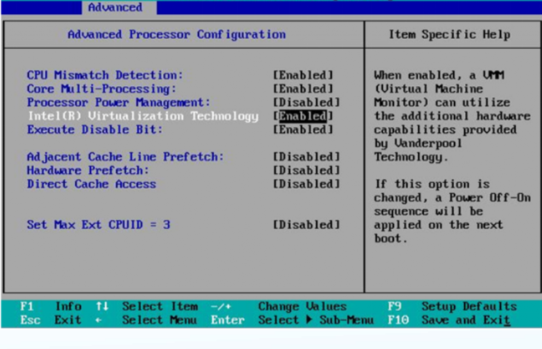
- Masuk BIOS
Tekan Del / F2 / F11 saat POST, sesuai petunjuk di layar.
- Buka Advanced
Cari Processor Configuration atau CPU Configuration.
- Ubah VT-x
Set Intel Virtualization Technology = Enabled.
- Simpan
Tekan F10, pilih Yes. Server akan restart sendiri.
- Verifikasi
Masuk BIOS lagi dan pastikan nilainya tetap Enabled.
Catatan lapangan: sekalian catat setelan lain di layar yang sama: CPU Power and Performance Management = Disabled dan Execute Disable Bit = Enabled. Dua perubahan ini menghemat satu kali kunjungan ulang ke rak.
Firmware dan USB bootable
Satu berkas ISO, satu flashdisk, dan satu keputusan mode boot. Bagian ini yang menentukan apakah server bisa masuk ke installer sama sekali.
Unduh firmware yang benar, lalu buktikan integritasnya.
Salah memilih berkas adalah kesalahan paling mahal di part ini: ISO upgrade tidak bisa dipakai untuk instalasi baru, dan ISO korup bisa merusak proses di tengah jalan.
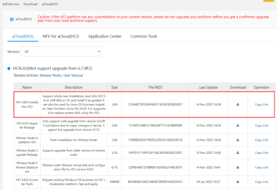
- Unduh dari portal resmi
Pilih produk HCI, versi yang disetujui, lalu unduh ISO instalasi — bukan patch atau paket upgrade.
- Catat build dan ukurannya
Contoh: Sangfor_HCI6.3.0_R1_EN(20210719).iso sekitar 3,3 GB. Build harus sama untuk semua node dalam satu cluster.
- Verifikasi checksum
Bandingkan SHA-256 dengan nilai di portal. ISO yang korup adalah penyebab kegagalan instalasi yang paling sulit dilacak.
- Baca release notes
Periksa known issue dan compatibility matrix disk, RAID card, serta NIC untuk versi tersebut.
Jebakan umum: jangan menebak dari nama file. ISO instalasi dan ISO upgrade sering terlihat mirip. Kalau ragu, buka release notes — di sana tertulis metode pemasangan yang didukung untuk build tersebut.
Tiga angka yang wajib dicatat: versi, build tanggal rilis, dan ukuran ISO. Tulis ketiganya di lembar instalasi. Saat node kedua dipasang, angka inilah yang memastikan keduanya benar-benar sama.
Empat hal yang harus ada di meja sebelum mulai.
Media instalasi bukan hanya ISO. Ada alat tulis, alat tulis digital, dan akses fisik yang harus disiapkan — karena beberapa langkah tidak bisa dilakukan remote.
USB
USB ≥ 4 GB · kondisi baik- Semua data di dalamnya akan dihapus.
- Jangan pakai flashdisk yang menyimpan data penting.
- USB 2.0/3.0, kapasitas 8–16 GB paling aman.
UltraISO
Versi terbaru · lisensi valid- Dipakai untuk menulis ISO ke flashdisk.
- Juga memverifikasi hasil tulis.
- Bukan extractor biasa — harus mode RAW/ISO.
File ISO HCI
Build yang disetujui- Sesuai versi firmware yang akan dipasang.
- Simpan juga checksum-nya.
- Letakkan di folder terpisah dari file lain.
KVM
Akses fisik · monitor, keyboard, kabel- Dibutuhkan untuk BIOS.
- Dibutuhkan untuk boot menu.
- Dibutuhkan untuk konfigurasi awal jaringan.
Jebakan umum: backup isi flashdisk dulu. Proses tulis menghapus seluruh partisi. Ini terdengar sepele sampai flashdisk yang dipakai adalah flashdisk pinjaman berisi file presentasi.
Realitas lapangan: di banyak instalasi, masalah bukan di firmware — tapi di tidak adanya monitor atau kabel keyboard yang hilang. Siapkan semuanya sebelum mematikan server produksi.
Estimasi waktu persiapan: 15–20 menit.
Lima langkah mengubah ISO menjadi media boot.
UltraISO dipakai karena bisa menulis image ISO ke flashdisk tanpa mengubah struktur boot-nya. Prosesnya lima langkah, dan semuanya bisa diulang kalau gagal.
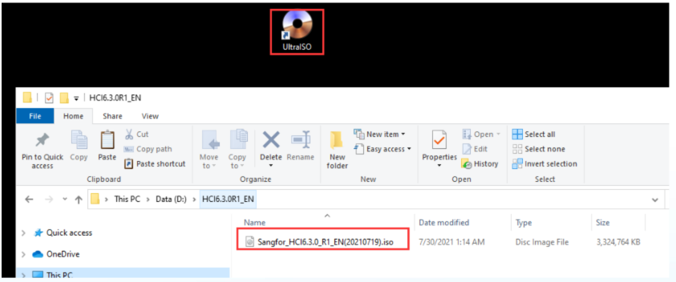
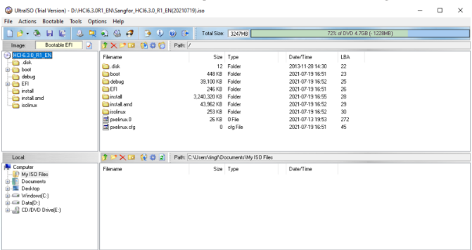
Buka ISO di UltraISO
dua langkah pertama terlihat sepele, tapi keduanya menentukan apakah file yang benar yang akan ditulis ke flashdisk.
- Siapkan berkas. Letakkan ISO dan UltraISO di folder yang sama — misalnya
D:\HCI6.3.0_R1_EN. Tujuannya agar tidak salah memilih file saat menulis. - Buka ISO. Jalankan UltraISO → File → Open → pilih file ISO. Panel kanan akan menampilkan isi ISO. Kalau kosong, file kemungkinan korup.
Kenapa ini penting: kenapa bukan copy-paste? ISO berisi bootloader dan struktur partisi. Menyalin file ke flashdisk tidak membuatnya bisa di-boot.
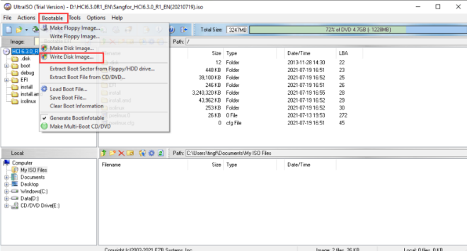
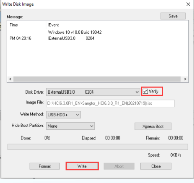
Tulis image ke flashdisk
Di sinilah flashdisk benar-benar berubah menjadi media boot. Pastikan target disk-nya benar — tidak ada undo setelah tombol Write ditekan.
- Buka Write Disk Image. Menu Bootable → Write Disk Image. Jendela baru akan muncul dengan daftar image yang sedang terbuka.
- Pilih flashdisk & Verify. Di Disk Drive, pilih flashdisk yang benar. Centang Verify agar hasil tulis dibaca ulang dan dibandingkan dengan ISO.
- Klik Write. Konfirmasi peringatan, lalu tunggu. Jangan mencabut flashdisk sampai proses selesai.
Jebakan umum: salah pilih Disk Drive = flashdisk lain ikut terhapus. Cek kapasitas dan huruf drive sebelum menekan Write.
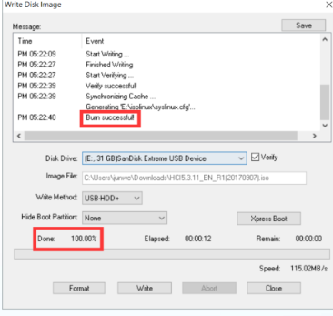
Pastikan hasilnya benar sebelum dipakai
Proses tulis selesai bukan berarti media siap. Ada tiga tanda yang harus diperiksa, dan satu tes boot singkat sebelum masuk ke server produksi.
- Progress 100% / Done. Tidak ada error di tengah proses.
- Burn successful muncul. Konfirmasi bahwa image dan verifikasi cocok.
- Ukuran partisi masuk akal. Sekitar ukuran ISO, bukan 32 GB kosong.
Catatan lapangan: tes boot paling murah — nyalakan server dengan flashdisk terpasang, lalu pastikan menu Sangfor HCI muncul. Kalau menu muncul, media sudah benar dan kamu bisa lanjut tanpa rasa was-was.
Kalau gagal: coba flashdisk lain → format ulang FAT32 → tulis ulang → cek checksum ISO. Jika tetap gagal, ISO-nya yang bermasalah, bukan flashdisk-nya.
Legacy atau UEFI? Satu keputusan, dua konsekuensi.
Mode boot menentukan skema partisi yang dibuat installer. Mengubahnya di tengah jalan berarti mengulang instalasi dari awal.
Legacy / MBR
- Kompatibel dengan hampir semua server x86
- Skema partisi MBR: disk sistem maksimal 2 TB
- Paling banyak dipakai di materi dan lab Sangfor
- Cocok jika seluruh node memakai mode yang sama
UEFI / GPT
- Mendukung disk sistem lebih dari 2 TB
- Butuh firmware dan opsi boot UEFI yang konsisten
- Beberapa card lama bisa tidak muncul di mode ini
- Semua node dalam cluster harus sama
Cara memutuskan
Lihat ukuran disk sistem — bukan disk data. Begitu keputusan diambil, jangan mengubahnya lagi di node mana pun. Campuran mode boot dalam satu cluster membuat node tidak bisa bergabung dengan bersih.
Jebakan umum: samakan mode boot sejak node pertama, bukan setelah node ketiga. Screenshot instalasi nanti menunjukkan peringatan “Device start with Legacy BIOS node… MBR partition table” — itu bukti bahwa mode boot benar-benar memengaruhi hasil.
Penentu mode boot
Disk sistem 200 GB — di bawah batas 2 TB, jadi pakai Legacy/MBR. Partisi MBR, kompatibel dengan hampir semua server.
Dari boot sampai login
Tiga belas layar, enam fase. Bagian ini menelusuri setiap layar yang akan kamu lihat — apa yang diminta, apa yang harus diisi, dan bagaimana hasilnya kalau salah.
Enam fase, satu arah, tanpa jalan pintas.
Seluruh proses biasanya 15–25 menit di server yang sudah siap. Yang membuatnya lama biasanya bukan instalasinya, tapi berhenti di tengah karena satu persyaratan belum terpenuhi.
Boot
Pilih Install Sangfor HCI di menu boot.
1–2 mntTerms
Baca dan setujui lisensi penggunaan.
1 mntDisk
Pilih disk sistem, ketik format.
2 mntUji disk
Tes baca/tulis, atau lewati dengan sadar.
1 mntJaringan
Isi IP management untuk eth0.
2 mntInstall
Tunggu, lepas USB, lalu reboot.
8–15 mntYang tidak bisa dilewati: boot, terms, pilih disk, dan konfigurasi eth0 adalah wajib. Tes kecepatan disk dan interface kedua bersifat opsional — tapi melewatinya harus keputusan sadar, bukan karena terburu-buru.
Kenapa ini penting: siapkan stopwatch sekali. Kalau satu fase jauh lebih lama dari perkiraan, biasanya ada disk yang lambat atau jaringan yang tidak reachable.
Tiga belas layar, satu per satu.
Setiap layar installer punya satu pembahasan: apa yang diminta, apa yang harus diisi, dan apa akibatnya kalau salah. Pilih fase di bawah untuk membuka layar-layar di dalamnya.
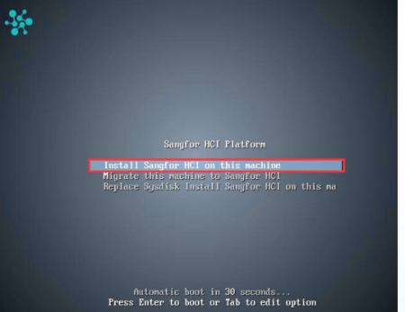
Menyalakan server dan masuk ke installer
Titik pertama yang sering gagal: server tetap boot dari disk lama karena urutan boot belum diubah. Kalau begitu, tidak ada layar instalasi yang akan muncul.
- Nyalakan & masuk boot menu. Tekan tombol boot menu (F11/F12/Esc, tergantung vendor) saat POST, lalu pilih USB.
- Pilih Install Sangfor HCI. Di menu Sangfor HCI Platform, pilih Install Sangfor HCI on this machine. Tanpa pilihan, installer berjalan otomatis dalam 30 detik.
- Tunggu layar biru. Installer memuat kernel dan komponen. Di server lama proses ini bisa 1–2 menit — jangan mematikan daya.
Tekan tombol boot menu berulang sebelum logo OS muncul. Tidak semua vendor memakai tombol yang sama. Tidak ada boot menu? Masuk BIOS langsung, lalu ubah Boot Priority dan Boot Mode.
Kalau menu tidak muncul: urutan boot — disk lama masih di posisi pertama, ubah Boot Priority · media USB — port atau penulisan gagal, coba port USB 2.0 dan tulis ulang · mode boot — Legacy/UEFI tidak sama antara BIOS dan media.
Catatan lapangan: jangan mencabut USB saat installer memuat. Layar biru yang berhenti lama bukan berarti hang — di server lama, memuat driver storage bisa 1–2 menit. Lihat LED aktivitas disk; kalau berkedip, tunggu.
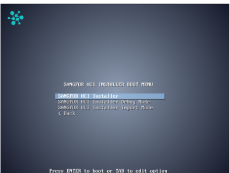
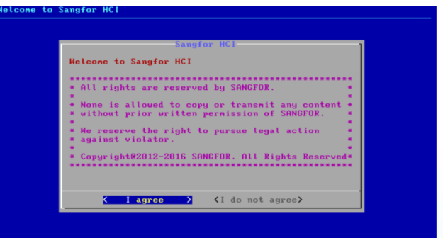
Installer dan persetujuan lisensi
Dua layar pertama terlihat sepele, tapi di sinilah banyak orang salah memilih mode instalasi. Pilih installer standar, bukan mode developer.
- Pilih installer standar. Di boot menu, pilih Install Sangfor HCI Installer. Mode Developer hanya untuk laboratorium dan tidak didukung untuk produksi.
- Baca terms & conditions. Gulir sampai bawah, lalu pilih I agree. Tanpa persetujuan, tombol Next tidak aktif.
- Konfirmasi versi. Pastikan nomor versi di layar sama dengan ISO yang kamu siapkan. Ini momen terakhir untuk berhenti kalau salah build.
Jebakan umum: mode developer tidak untuk produksi.
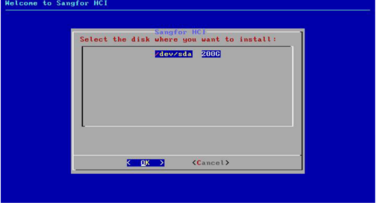
Memilih disk sistem — langkah paling tidak bisa diulang
Installer menampilkan semua disk yang terlihat. Tugas kamu adalah memilih satu disk yang benar, dan memastikan tidak ada data penting di dalamnya.
- Baca daftar disk. Ukuran, model, dan nama device (/dev/sda, /dev/sdb) ditampilkan. Cocokkan dengan inventaris hardware.
- Pilih disk sistem. Contoh di layar: /dev/sda 200 GB. Gunakan panah dan Enter, lalu pilih OK.
- Periksa sekali lagi. Kalau ragu antara dua disk, batalkan dan cek label fisik di server. Instalasi bisa diulang; data tidak.
Jebakan umum: disk sistem ≠ disk data. Di lab, semuanya terlihat sama. Di produksi, memilih disk data berarti menghapus seluruh VM yang ada di dalamnya.
Tiga pertanyaan sebelum menekan OK: apakah ukurannya sesuai disk sistem? · apakah ini disk yang sama dengan label di server? · apakah sudah backup? Kalau ada satu jawaban “tidak”, berhenti.
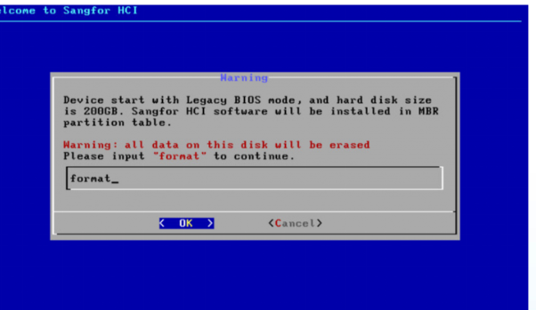
Ketik “format” — dan pahami apa yang terjadi
Installer meminta konfirmasi dengan mengetik kata format. Ini bukan formalitas: perintah ini menghapus tabel partisi dan seluruh isi disk yang dipilih.
- Ketik format. Huruf kecil, tanpa tanda kutip, lalu Enter.
- Konfirmasi OK. Installer mulai membuat partisi dan menulis image.
- Jangan sentuh apa pun. Proses menulis 8–15 menit. Jangan cabut USB atau matikan daya.
Isi peringatan di layar: “Legacy BIOS node → partisi MBR” · “All data on this disk will be erased” → tidak ada recycle bin · “Please input format to continue” → konfirmasi manual.
Apa yang sebenarnya terjadi: installer membuat partisi sistem, menyalin image firmware, lalu menyiapkan struktur yang dibutuhkan aSAN dan hypervisor. Setelah selesai, disk ini bukan lagi disk kosong — ia menjadi node HCI.
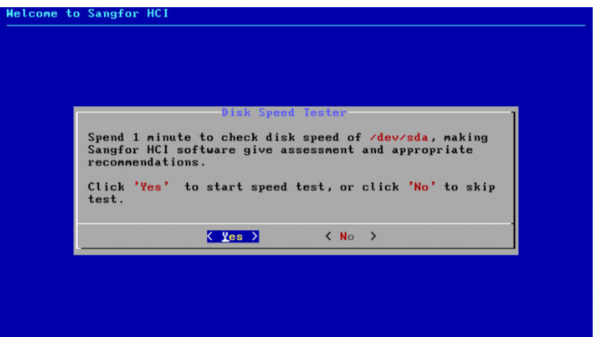
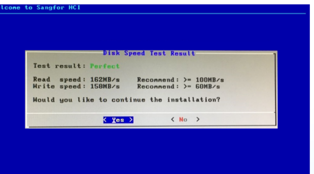
Tes kecepatan disk: satu menit yang menghemat berhari-hari
Tes ini opsional, tapi sangat disarankan. Hasilnya memberi tahu apakah disk sistem akan menjadi bottleneck sebelum cluster dijalankan.
Hasil: Perfect. Kedua metrik di atas standar minimum. Disk sistem bukan bottleneck — lanjut ke konfigurasi jaringan.
Catatan lapangan: simpan hasilnya. Angka read/write per node berguna saat membandingkan performa cluster di kemudian hari — dan saat membuktikan bahwa masalahnya bukan di HCI.
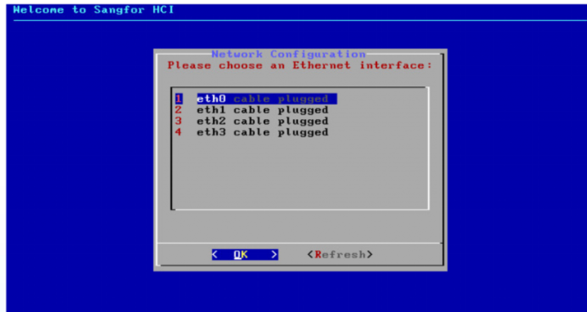
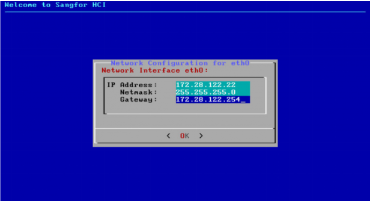
eth0 adalah pintu masuk ke seluruh platform
IP yang kamu isi di sini adalah satu-satunya cara accessing node setelah reboot. Salah subnet atau gateway berarti kembali ke rak dengan monitor.
- Pilih eth0. Installer menampilkan eth0–eth3 dengan status kabel. eth0 adalah management — pilih yang ada tulisan cable plugged.
- Isi IP, netmask, gateway. Gunakan IP statis dari denah. Jangan DHCP: alamat yang berubah membuat console hilang setelah reboot.
- Konfirmasi. Periksa ulang setiap angka sebelum menekan OK. Tidak ada layar edit setelah ini.
Angka di layar installer hanya contoh. Ambil dari denah IP, bukan dari modul ini.
Jebakan umum: IP management tidak boleh bertabrakan dengan perangkat lain, dan gateway harus benar-benar routable dari jaringan admin. Uji dengan ping dari laptop sebelum menutup sesi instalasi. Kalau IP berubah setelah cluster terbentuk, seluruh node harus diperiksa ulang.
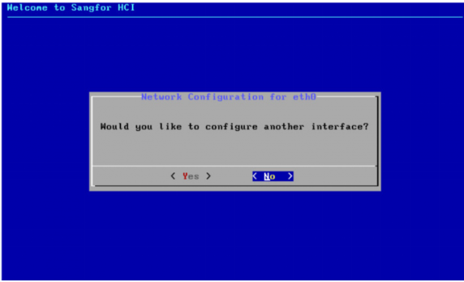
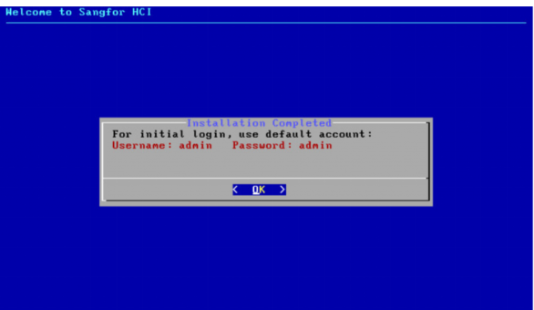
Interface kedua dan akun default
Dua layar terakhir sebelum instalasi menulis sistem. Keduanya cepat, tapi menentukan seberapa aman node saat pertama kali online.
- Interface tambahan? Pilih No kalau hanya eth0 yang dipakai untuk management. Interface storage dan bisnis dapat dikonfigurasi setelah login.
- Catat akun default. Username admin, password admin. Akun ini berlaku untuk login pertama ke console web.
- Siap menerima hasil. Setelah ini installer menulis sistem dan menampilkan layar konfirmasi. Jangan mematikan daya.
Jebakan umum: admin/admin adalah pintu terbuka. Ganti password segera setelah login, sebelum node dimasukkan ke jaringan produksi.
Checklist hari 1: ganti password · buat admin kedua · aktifkan NTP.
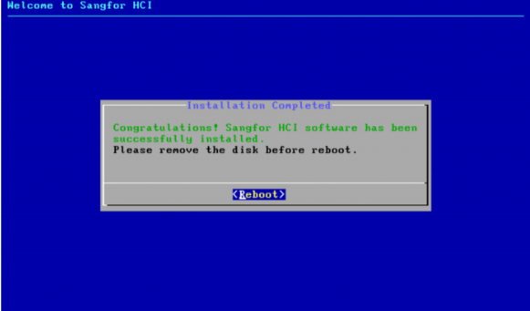
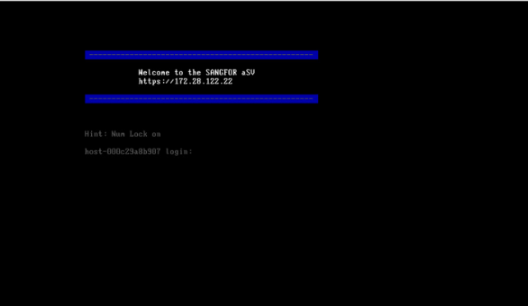
Instalasi selesai: lepas USB sebelum reboot
Installer menampilkan pesan berhasil dan meminta reboot. Satu detail kecil di sini menentukan apakah server boot dari disk atau kembali ke installer.
- Lepas USB bootable. Cabut flashdisk sekarang. Kalau masih terpasang, server bisa kembali ke installer dan mengulang proses.
- Pilih Ok untuk reboot. Installer melakukan restart. Biarkan server menyala sampai layar teks muncul.
- Tunggu layar alamat akses. Setelah boot, layar menampilkan
https://<IP>beserta versi dan build. Ini tanda node sudah berdiri sendiri.
Catatan lapangan: kalau server kembali ke menu installer, kemungkinan USB masih terpasang atau urutan boot masih ke USB. Matikan, lepas media, lalu boot ulang. Jangan menutup sesi sebelum layar alamat akses muncul.
Dari layar server ke browser
Node yang sudah boot menampilkan alamat management. Buka dari browser di jaringan yang sama, login dengan akun default, dan langsung amankan. Empat langkah ini yang membedakan “terpasang” dan “siap dipakai”.
Jebakan umum: browser akan memperingatkan sertifikat self-signed. Itu normal di instalasi baru — lanjutkan dengan sadar, lalu ganti sertifikat jika node dipakai di produksi.
Dari node jadi cluster
Node yang terpasang belum tentu siap. Verifikasi, gabung cluster, dan kenali gejala masalah sebelum bertanya ke vendor.
Sepuluh titik sebelum node dianggap selesai.
Node yang bisa di-login belum tentu sehat. Periksa sepuluh hal ini dengan bukti, bukan asumsi — semuanya jauh lebih murah diperbaiki sekarang daripada tiga bulan lagi.
Checklist verifikasi node
Centang yang sudah kamu periksa langsung di console. Progres disimpan di browser ini.
Catatan lapangan: simpan bukti, bukan ingatan. Screenshot tiap tab, catat versi build, dan simpan di dokumen as-built. Saat node bermasalah tiga bulan lagi, checklist inilah yang menyelamatkan.
Jebakan umum: jangan gabung cluster sebelum 10/10. Satu item gagal berarti node belum layak masuk produksi — perbaiki dulu, jangan diabaikan.
Tiga node, satu cluster, satu syarat.
Node pertama hanya titik awal. Cluster baru aman kalau setiap node memakai firmware, mode boot, dan jaringan yang sama.
node-01
10.251.251.111
node-02
10.251.251.112
node-03
10.251.251.113
| Syarat sebelum join | Kenapa wajib |
|---|---|
| Firmware & build identik | Satu node beda build akan menahan seluruh cluster. |
| Mode boot sama di semua node | Campuran Legacy/UEFI membuat node tidak bisa bergabung dengan bersih. |
| IP management unik, satu subnet | IP yang bertabrakan bikin dua node merebut alamat yang sama. |
| VLAN & MTU konsisten | Storage traffic butuh MTU seragam antar node. |
| Waktu tersinkron (NTP) | Waktu berbeda memicu error lisensi dan konflik log. |
| Minimal 3 node untuk produksi | Quorum aman dan masih ada ruang mematikan satu node saat pemeliharaan. |
Mengapa tiga node: tiga node adalah konfigurasi minimum yang direkomendasikan untuk produksi — quorum aman dan masih ada ruang mematikan satu node saat pemeliharaan.
Urutan join: join satu node pada satu waktu. Tunggu status sehat sebelum menambah node berikutnya — jangan menyalakan tiga node baru sekaligus.
Gejala, sebab, dan tindakan pertama.
Sebagian besar kegagalan instalasi berasal dari lima area yang sama: boot, media, disk, jaringan, dan akun. Gunakan tabel ini sebelum reinstal.
| Gejala | Penyebab paling sering | Cek pertama | Tindakan |
|---|---|---|---|
| Tidak masuk boot menu | Urutan boot masih ke disk | Boot Priority di BIOS | Set USB first, simpan |
| USB tidak terdeteksi | Port atau penulisan gagal | Coba port USB 2.0 | Tulis ulang ISO, verify |
| Berhenti di layar biru | Media lambat / driver storage | LED aktivitas disk | Tunggu 2 menit, jangan cabut |
| Disk tidak muncul | Mode controller RAID | Mode SATA/NVMe di BIOS | Ubah ke AHCI/JBOD |
| Format gagal / I/O error | Disk atau kabel bermasalah | SMART dan seating kabel | Ganti disk atau kabel |
| Speed test di bawah standar | HDD, cache, atau port | Angka read/write | Ganti port, pakai SSD |
| Console tidak bisa dibuka | IP, gateway, atau VLAN | Ping dari laptop | Perbaiki lewat console |
| Server kembali ke installer | USB masih terpasang | Urutan boot priority | Lepas media, boot ulang |
Catatan lapangan: urutan diagnosis — fisik → BIOS → media → jaringan → installer. Jangan langsung reinstal; satu kabel longgar bisa terlihat seperti firmware rusak.
Lima kesalahan yang paling mahal.
Semua jebakan di bawah ini punya pola yang sama: satu langkah dipercepat, lalu instalasi diulang dari awal. Kenali sebelum terjadi.
Salah pilih disk
Semua VM dan data di disk itu hilang. Lepas kabel data disk lain sebelum instalasi, lalu cocokkan ukuran dan label fisik.
Mode boot dicampur
Node tidak bisa join cluster. Putuskan Legacy atau UEFI sebelum instalasi dan pakai mode yang sama di semua node.
IP management salah
Node hilang setelah reboot. Pakai IP statis dari denah, uji ping dan gateway sebelum menutup sesi.
USB dicabut saat menulis
Image korup dan instalasi diulang. Tunggu sampai layar “Installation Completed” muncul, baru lepas media.
Password default dibiarkan
Node menjadi pintu masuk. Ganti admin/admin pada login pertama, sebelum tersambung ke jaringan produksi.
Pola yang sama: semua jebakan terjadi karena satu langkah dipercepat. Kalau ragu, berhenti dan periksa — instalasi ulang jauh lebih mahal daripada dua menit verifikasi.
Kalau hanya lima hal yang boleh kamu ingat, ini dia.
Lima kalimat ini merangkum seluruh modul. Kalau hanya satu yang diingat, ingat yang pertama: instalasi dimulai dari keputusan.
Instalasi dimulai dari keputusan, bukan dari USB. Hardware, mode disk, dan mode boot ditentukan sebelum media dibuat.
Media yang benar menghilangkan separuh masalah. ISO terverifikasi, USB bertulis benar, dan mode boot cocok dengan BIOS.
Disk sistem hanya satu; data tidak bisa dikembalikan. Periksa dua kali, lepas kabel disk lain, dan jangan mengandalkan ingatan.
eth0 adalah satu-satunya pintu masuk. IP statis, gateway yang routable, dan pengujian ping sebelum menutup sesi.
Selesai berarti bisa diakses dan diverifikasi. Sepuluh checklist, bukan layar “Congratulations”.
Kenapa ini penting: satu node selesai bukan berarti cluster siap. Verifikasi dulu, baru join — dan join satu node pada satu waktu.
Satu halaman untuk dibawa ke lapangan.
Semua nilai di bawah ini adalah contoh dari modul — ganti dengan denah dan ISO yang kamu pakai.
Urutan singkat
VT-x on · boot mode ditetapkan
Tulis ISO · verify media
F11 / F12 / Esc / Del → USB
Standar · I agree
/dev/sda · ketik format
eth0 · IP / netmask / gateway
Lepas USB · reboot · login
Simpan halaman ini di samping server atau di dokumen as-built — bukan di chat yang tenggelam.
Istilah yang muncul di modul ini.
Ketik untuk memfilter. Definisi dibuat pendek agar cepat dipakai saat membaca slide atau mendengar istilah baru di rak.
Intel Virtualization Technology. Extension virtualisasi di CPU; wajib aktif agar hypervisor bisa membuat VM.
Storage terdistribusi Sangfor. Menyalin data antar node di lapisan software, sehingga disk fisik harus terlihat utuh.
Berkas image disk yang berisi bootloader dan struktur partisi installer. Disalin ke flashdisk apa adanya agar bisa di-boot.
Algoritma checksum yang dipakai untuk memverifikasi bahwa file ISO yang diunduh tidak korup.
Just a Bunch Of Disks. Mode controller yang meneruskan tiap disk apa adanya ke sistem tanpa RAID di level hardware.
Redundant Array of Independent Disks. Redundansi di level controller; tidak cocok dengan model replikasi aSAN.
Master Boot Record. Skema partisi lama; batas disk sistem praktis 2 TB, dipakai pada mode boot Legacy.
Unified Extensible Firmware Interface. Mode boot modern dengan skema GPT; mendukung disk sistem di atas 2 TB.
GUID Partition Table. Skema partisi yang menyertai mode boot UEFI, dengan batas ukuran jauh lebih besar dari MBR.
Advanced Host Controller Interface. Mode controller yang membuat disk terlihat individual; sering perlu diubah dari RAID di BIOS.
Power-On Self-Test. Tahap boot pertama server; momen ketika tombol boot menu ditekan.
Alat untuk menulis image ISO ke flashdisk sekaligus memverifikasi hasil tulis, tanpa mengubah struktur boot.
Sistem file flashdisk. Format ulang ke FAT32 adalah salah satu langkah pemulihan saat proses tulis gagal.
Interface management. Satu-satunya pintu masuk node setelah reboot — karena itu IP-nya harus statis dan benar.
Virtual LAN. Segmentasi logis jaringan; memisahkan management, storage, dan traffic bisnis ke VLAN berbeda.
Maximum Transmission Unit. Ukuran payload terbesar per frame; harus konsisten antar node untuk traffic storage.
Network Time Protocol. Sinkronisasi jam antar node; waktu yang salah memicu error lisensi dan sertifikat.
Jumlah node yang harus tetap hidup agar cluster punya keputusan valid. Pada tiga node, quorum berarti 2 dari 3.
Self-Monitoring, Analysis and Reporting Technology. Data kesehatan disk yang dipakai saat memverifikasi disk sistem.
Sertifikat yang ditandatangani sendiri oleh node. Browser akan memperingatkan; normal pada instalasi baru.
Penalti performa pada RAID 5/6 karena setiap tulis dihitung berkali-kali — lapisan yang tidak perlu di atas replica aSAN.
Error Correcting Code. Memori yang dapat mendeteksi dan memperbaiki bit-flip, mencegah VM crash tanpa jejak.
Tidak ada istilah yang cocok. Coba kata kunci lain.
Uji pemahaman: 5 pertanyaan, bukan hafalan.
Jawab dulu sebelum membuka pembahasan. Kalau ada yang salah, kembali ke bagian terkait sebelum sesi praktik.
Berapa node minimum untuk cluster produksi?
Di layar mana disk sistem dipilih?
Apa fungsi tes kecepatan disk?
Mengapa IP management harus statis?
Apa tanda instalasi benar-benar selesai?
Skor kamu tersimpan di halaman ini. Ulangi kuis kalau ingin menguji ulang.
Pertanyaan yang biasanya muncul di lapangan.
Bolehkah saya memakai RAID 5 untuk storage HCI?
Bisakah ISO upgrade dipakai untuk instalasi node baru?
Apakah disk speed test boleh dilewati?
Kenapa browser menampilkan peringatan sertifikat self-signed?
Kenapa harus melepas USB sebelum reboot?
Kenapa IP management tidak boleh pakai DHCP?
Apa yang terjadi kalau mode boot tercampur dalam satu cluster?
Apakah password admin/admin boleh dipakai di produksi?
Kapan node boleh dimasukkan ke cluster?
Apakah harus punya monitor dan keyboard di rak?
Checklist kesiapan sebelum sesi praktik
Centang yang sudah kamu kuasai. Progres disimpan di browser ini.
Satu node selesai. Cluster menunggu.
Instalasi firmware adalah titik awal, bukan akhir. Node yang sudah diverifikasi baru boleh menjadi bagian dari cluster produksi. Modul berikutnya — Operasional & Manajemen Cluster HCI — melanjutkan dari pool, VLAN, template VM, dan monitoring.